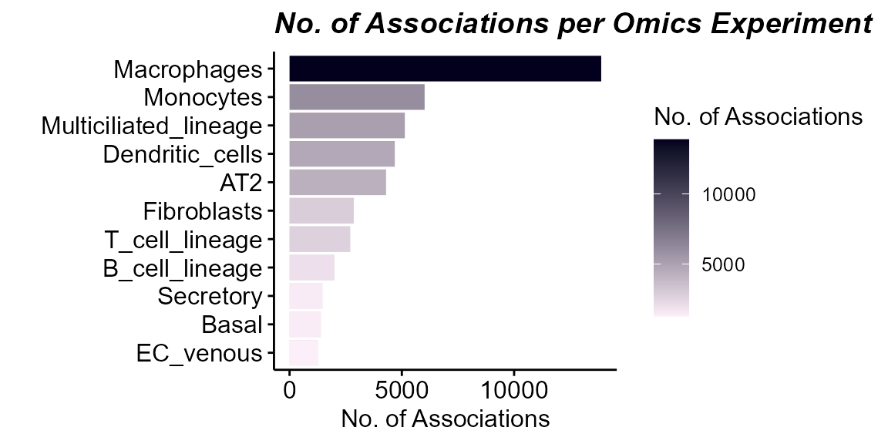

Single-cell-Exposure Associations
Jason Laird
Source:vignettes/articles/single_cell_exposure_associations.Rmd
single_cell_exposure_associations.Rmd- Convert single-cell data (
SingleCellExperimentorSeurat) into anexposomicsetby pseudobulking per cell type. - Filter lowly expressed genes within each cell type.
- Identify exposure-responsive cell types by testing exposure-omics associations.
- Determine which exposures drive the most associations across cell types.
- Run GO enrichment on exposure-associated genes to interpret effects per cell type.
Prerequisites
To integrate single-cell data into tidyexposomics you
need to perform cell type annotation. For now, we recommend following
the Seurat PBMC
3K tutorial. Then once you have cell type annotations, feel free to
move onto the next section!
Single-cell Integration
To integrate single-cell workflows with tidyexposomics
we provide a wrapper function
transform_sce_to_exposomicset. This function will take a
SingleCellExperiment or Seurat object,
pseudobulk to get gene by sample matrices per cell type and convert the
whole thing to a MultiAssayExperiment object:
# load libraries
library(tidyexposomics)
library(tidyverse)
# make an small example SingleCellExperiment object
sce <- make_example_sc()
# make the codebook for the example SingleCellExperiment object
codebook <- make_example_sce_codebook()
# transform this object into an exposomicset
mae_small <- transform_sce_to_exposomicset(
sce = sce,
codebook = codebook,
sample_col = "sample",
cluster_col = "celltype",
sample_meta_cols = codebook$variable
)Now, this small toy dataset lacks a lot of the complexity of real data. So we have taken the Human Cell Lung Atlas, simulated exposure data, and converted it to a MultiAssayExperiment object in the same we did before with the toy data. This gives a more real world example of what you would be likely to encounter.
# download our HCA Lung Atlas data
hca_lung <- download_dataset("hca_lung")
# define our exposure variables
exposures <- hca_lung |>
extract_results(result = "codebook") |>
filter(!category %in% c("covariate","metadata","outcome","id")) |>
pull(variable)
# take a look at our object
hca_lung## A MultiAssayExperiment object of 11 listed
## experiments with user-defined names and respective classes.
## Containing an ExperimentList class object of length 11:
## [1] Macrophages: SummarizedExperiment with 27402 rows and 115 columns
## [2] AT2: SummarizedExperiment with 27402 rows and 86 columns
## [3] Basal: SummarizedExperiment with 27402 rows and 97 columns
## [4] EC_venous: SummarizedExperiment with 27402 rows and 106 columns
## [5] T_cell_lineage: SummarizedExperiment with 27402 rows and 114 columns
## [6] Fibroblasts: SummarizedExperiment with 27402 rows and 101 columns
## [7] Multiciliated_lineage: SummarizedExperiment with 27402 rows and 138 columns
## [8] B_cell_lineage: SummarizedExperiment with 27402 rows and 88 columns
## [9] Secretory: SummarizedExperiment with 27402 rows and 137 columns
## [10] Monocytes: SummarizedExperiment with 27402 rows and 103 columns
## [11] Dendritic_cells: SummarizedExperiment with 27402 rows and 127 columns
## Functionality:
## experiments() - obtain the ExperimentList instance
## colData() - the primary/phenotype DataFrame
## sampleMap() - the sample coordination DataFrame
## `$`, `[`, `[[` - extract colData columns, subset, or experiment
## *Format() - convert into a long or wide DataFrame
## assays() - convert ExperimentList to a SimpleList of matrices
## exportClass() - save data to flat filesHere we see that each cell type is its own experiment in the MultiAssayExperiment object. Now let’s demonstrate how we would identify cell types that are exposure-responsive.
Preprocessing
Exposure Preprocessing
The exposure data here was simulated and doesn’t need preprocessing. For your own workflows, please follow the exposure preprocessing tutorial.
Filtering Omics Layers
Single cell types do not typically express all ~20,000 genes, and including all of them will dilute our signal. So let’s filter each of these matrices to retain genes that are highly expressed:
# filter each assay to retain features with at
# least a CPM of 1 in 30% of samples
hca_lung <- hca_lung |>
filter_omics(
method = "expression",
assays = experiments(hca_lung) |> names(),
assay_name = 1,
min_value = 1,
min_prop = 0.3
)Exposure-responsive Cells
The easiest way to identify exposure-responsive cells is to see how many exposures each cell’s omics features are associated with. Let’s try this out!
# run exposure-cell type omics associations
hca_lung <- hca_lung |>
run_exposure_omics_association(
formula = ~ .feature,
exposures = exposures)Now to see which cell type had the greatest number of associations with exposures:
# plot the exposure-responsive cell types
plot_exposure_omics_association(
exposomicset = hca_lung,
plot_type = "exp_name",
pval_col = "p.value",
pval_thresh = 0.05)
Here we can see that macrophages and monocytes have the greatest number of associations. Now let’s see which exposures are driving this:
# plot the top exposures
plot_exposure_omics_association(
exposomicset = hca_lung,
plot_type = "exposures",
pval_col = "p.value",
pval_thresh = 0.05)
Here we see that Radon and Ozone have the greatest number of omics associations.
Biological Interpretation
Now let’s say we were interested in the biological effects of radon
per cell type. Let’s run gene ontology (GO) enrichment analysis to
figure this out! Keep in mind for our variable map, we need the two
columns to be exp_name and variable.
variable must be feature for omics
features.
# create the variable map for the cell types and significant
# radon-associated features
var_map <- hca_lung |>
extract_results("association") |>
pluck("exposure_omics","results_df") |>
filter(p.value<0.05,
exposure=="radon") |>
distinct(exp_name=exp_name,
variable = feature)Now to run our enrichment analysis:
# run enrichment analysis on radon-associated features
hca_lung <- run_enrichment(
exposomicset = hca_lung,
variable_map = var_map,
feature_type = "omics",
feature_col = "feature_name",
db = c("GO"),
species = "goa_human",
fenr_col = "gene_symbol",
padj_method = "none",
pval_thresh = 0.05,
min_set = 1,
max_set = 800,
clustering_approach = "diana",
action = "add"
)And let’s visualize these results with a dotplot to see per-cell type results:
# Plot a dotplot of terms
plot_enrichment(
exposomicset = hca_lung,
feature_type = "omics",
plot_type = "dotplot",
top_n = 3,
add_top_genes = TRUE,
top_n_genes = 5
)## NULLHere we see that radon is associated with changes in stress response pathways, RNA binding, and kinase activity, particularly in Macrophages.